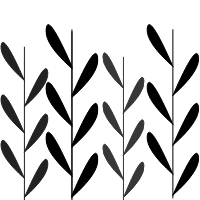

Average Product Value per Farm ($1000s)

Average value of agricultural products per farm in thousands of dollars in 2012.
% Corporate Farms

Percent of all farms operated by corporations. Other farms are owned by individuals, families, or partnerships.
% Farmland Irrigated

Percent of total farmland irrigated.
Prime Farmland
Unused prime farmland includes both undeveloped and developed land.
Quick Facts:
⚬ The average value of agricultural output farm an individual farm in the PNW in 2012 was $215,000
⚬ Gooding County, Idaho had the highest average agricultural output in 2012 at $1,581,904
Quick Facts:
⚬ Approximately 8% of farms in the PNW are owned by corporations.
⚬ Lincoln County, Idaho had the highest percentage of farms operated by corporations in 2012 at 28.43%
⚬ Shoshone County, Idaho had the highest percentage of farms operated by families/individuals in 2012 at 94.44%
Quick Facts:
⚬ Minidoka County, Idaho had the highest percentage of irrigated farmland in 2012 at 83.79%
Prime Farmland:
Prime Farmland is defined by the USDA as land with "the best combination of physical and chemical characteristics for producing food, feed, forage, fiber, and oilseed crops and is available for these uses." Modern land use practices have caused areas of prime farmland to be lost as land is developed. As a result, pressure is applied to more marginal land, which is more difficult to manage and cultivate.